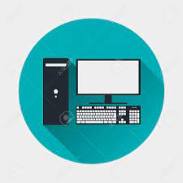

computadores

Una computadora, también llamada computador u ordenador, es una máquina electrónica digital programable que procesa datos para generar información útil. Básicamente, recibe datos, los procesa siguiendo instrucciones (programas) y entrega resultados. Está compuesta de hardware (componentes físicos) y software (programas). Más detalles: Procesamiento de datos: Las computadoras manipulan datos, como números, texto, imágenes, etc., para realizar diversas tareas. Programación: Las computadoras siguen instrucciones detalladas (programas) para procesar la información. Hardware: Incluye componentes físicos como la CPU (unidad central de procesamiento), memoria, dispositivos de entrada (teclado, mouse) y salida (pantalla, impresora). Software: Son los programas que ejecutan tareas específicas, como sistemas operativos, aplicaciones, etc.
Características de la computadora Si buscamos la definición exacta del término encontraremos que se trata de un dispositivo capaz de recibir, procesar y devolver resultados en torno a determinados datos y que para realizar esta tarea cuenta con un medio de entrada y uno de salida. Por otro lado, hay que saber que un sistema informático se compone de dos subsistemas que reciben los nombres de software y hardware.